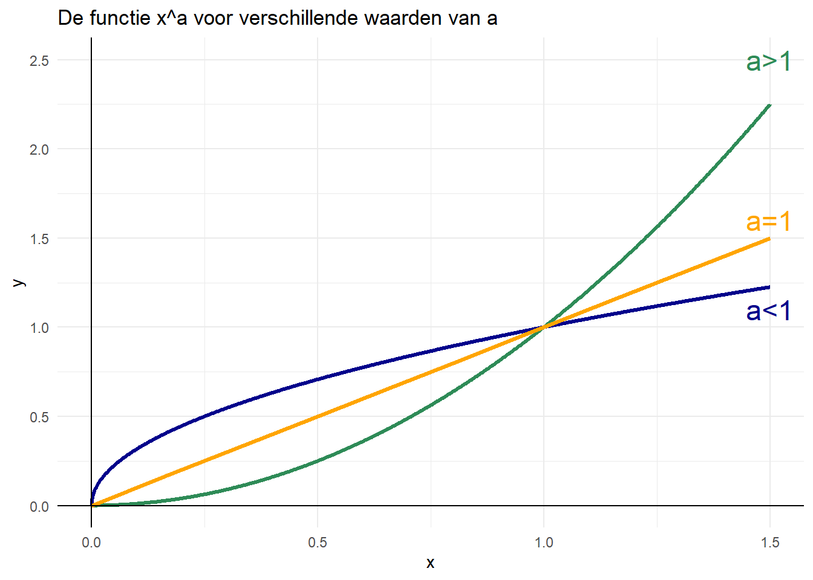

6 Functies schetsen
6.1 Introductie
Functies laten zien hoe variabelen met elkaar samenhangen. Bijvoorbeeld, \(y=f(x)\) kan beschrijven hoe zwaar iemand gemiddeld is (\(y\) is het gewicht) op basis van hun lengte (\(x\) is de lengte). Of het kan laten zien hoeveel bacteriën er zijn (\(y\)) na verloop van tijd (\(x\)). Functies zijn dus een belangrijk middel om gegevens te beschrijven en samen te vatten.
Om te begrijpen wat een functie \(f(x)\) laat zien, is het nuttig om de grafiek ervan te kunnen tekenen. Hiervoor moeten we een aantal belangrijke punten van de functie bepalen: eigenschappen zoals snijpunten met de x- en y-as, asymptoten, en waar eventuele toppen of dalen liggen. Dit vereist technieken zoals het oplossen van vergelijkingen, het vinden van limieten en het berekenen van afgeleiden, zoals eerder besproken.
6.2 Veelvoorkomende functies
Functies worden vaak weergegeven door hun grafiek. Hierbij zetten we de waarden van \(x\) op de x-as en de waarde van de functie \(f(x)\) op de y-as. Hieronder staan enkele veelvoorkomende grafieken.
Grafieken van een constante functie
De grafiek van een functie van de vorm \(y=p\) is een horizontale lijn die de y-as snijdt op de waarde \(p\). In plaats daarvan kunnen we ook vinden dat \(x=q\), wat een verticale lijn is die de x-as snijdt op de waarde \(q\). (NOTE FOR MADELON: ALLEBEI IN 1 PLAATJE?)
Grafieken van lineaire functies
De grafiek van een lineaire functie \(y=ax+b\) is een rechte lijn met helling \(a\) en snijpunt \(b\) op de y-as. Dat laatste kun je zien door \(x=0\) in te vullen: op dit moment snijdt je de y-as! Als \(a>0\), loopt de lijn stijgend; bij \(a<0\) daalt de lijn. Hoe groter \(|a|\), hoe steiler de lijn.
Grafieken van kwadratische functies
De grafiek van de kwadratische vergelijking \(y=ax^2+bx+c\) is een parabool. Bij \(a>0\) opent de parabool naar boven (dalparabool), bij \(a<0\) naar beneden (bergparabool). De waarden van \(a\), \(b\) en \(c\) bepalen hoe de parabool ligt. Met de abc-formule kun je vinden wanneer de functie \(0\) is. Dit zijn de snijpunten met de x-as. Door \(x=0\) in te vullen vindt je het snijpunt met de y-as (hier: \(c\)). Door de afgeleide te vinden en deze gelijk te stellen aan \(0\) vind je waar de piek of het dal ligt.
Grafieken van machtsfuncties
Grafieken van functies zoals \(x^a\) veranderen van hellingshoek naar mate \(x\) groter of kleiner wordt. Als \(a>1\), dan neemt de helingshoek toe, en . Als \(0<a<1\) (als \(a\) tussen 0 en 1 ligt), neemt de helingshoek af. Als \(a=1\), dan blijft de hellingshoek gelijk, want dan is de functie precies gelijk aan \(y=x\).
6.3 Stappenplan functies schetsen
- Vind de snijpunten met de \(x\)-as door \(y = f(x) = 0\) op te lossen.
- Vind de snijpunten met de \(y\)-as door \(x=0\) in te vullen in \(y = f(x)\).
Tip
Niet elke functie heeft een snijpunt met de \(x\)- en/of \(y\)-as.
- Vind horizontale asymptoten door de limieten \(y = \lim x \to \pm \infty\) te berekenen.
- Voor rationale functies, met de vorm \(f(x) = {p(x) \over q(x)}\), vind verticale asymptoten door te bepalen of er waarden voor \(x\) zijn waarvoor \(q(x)=0\) (en dus \(f(x) \to \pm \infty\)). Deze \(x\)-waarden zijn verticale asymptoten van de functie.
- Vind minima en maxima door te bepalen voor welke \(x\)-waarden geldt dat \(f'(x)=0\). Bepaal vervolgens de \(y\)-waarde van deze minima en maxima door de gevonden \(x\)-waarden in te vullen in \(f(x)\).
Tip
Als je twijfelt of een functie stijgt of daalt voor bepaalde \(x\)-waarden kun je gebruikmaken van de afgeleide voor die \(x\)-waarden. Als \(f'(x) > 0\) dan stijgt de functie rond die \(x\)-waarde. Als \(f'(x) < 0\) dan daalt de functie rond die \(x\)-waarde.
6.4 Opdrachten
Oefening 6.1 Gebruik het bovenstaande stappenplan om de volgende functies te schetsen:
a. \(y=3-6x\)
b. \(y=px+q\), neem aan dat \(p>0\) en \(q>0\)
c. \(y=x-3x^2\)
d. \(y=(a-x) \cdot (b-x) \cdot (c-x)\), neem aan dat \(a,b,c>0\) en \(a<b<c\), namelijk \(b=2 \cdot a\) en \(c=3 \cdot a\)
e. \(y=x^3-5x^2\)
f. \(y=\frac{4x}{x+2}+4\)
Oefening 6.2 We zijn vaak gewend dat x op de horizontale as staat, en y op de verticale as. Soms staat het echter helemaal niet vast wat we precies op welke as moeten schetsen (of heten de variabelen helemaal geen x- en y!).
Stel we vinden een verband tussen het aantal konijnen (\(K\)) en het aantal vossen (\(V\)) omschreven door de functie \(K = a - b \cdot V\).
a. Hoeveel konijnen zijn er als er geen vossen zijn? Wat is effect van vossen op de hoeveelheid konijnen?
b. Teken een assenstelsel met \(K\) op de x-as, en \(V\) op de y-as. Probeer de functie \(K = a - b \cdot V\) te schetsen.
c. Herschrijf \(K = a - b \cdot V\) zodat het aantal vossen wordt uitgedrukt als een functie van het aantal konijnen. Schets nu ook deze functie in je assenstelsel. Wat valt je op?
d. Als we meteen het aantal konijnen op de y-as hadden gezet, hadden we dan de functie hoeven herschrijven?